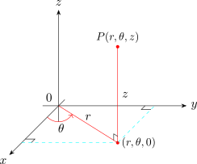
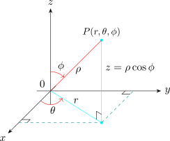

2.2 Cylindrical and Spherical Coordinates
In three dimensions, there are two coordinates systems that give convenient descriptions of some common occurring surfaces and solids.
Cylindrical Coordinates

\[x = r\cos \theta \hspace {0.3cm}, \hspace {1cm} y = r\sin \theta \hspace {0.3cm},\hspace {1cm} z =z\]
where as to convert from rectangular to cylindrical coordinates we use \[r^2 = x^2 + y^2\hspace {0.2cm}, \hspace {1cm} \tan \theta = \frac {y}{x}\hspace {0.2cm},\hspace {1cm} z =z\]
Cylindrical coordinates are useful in problems that involve symmetry about some axis and the \(z-\)axis is chosen to coincide with the axis of symmetry.
Solution.
\(z =r\)
\(z = r^2 = x^2 + y^2\)
\(z^2 = x^2 + y^2\)
Cone, with axis of symmetry \(z\) axis.
Find an equation in cylindrical coordinates for the ellipsoid \[4x^2 + 4y^2 + z^2 =1\]
Solution.
\(r^2 = x^2 + y^2\)
\begin {align*} 4(x^2 + y^2) + z^2 & =1\\ 4r^2 + z^2 & =1\\\\ \therefore \hspace {0.5cm}z^2 & = 1 - 4r^2\\\\ \end {align*}
Spherical Coordinates
The spherical coordinate \((\rho , \theta , \phi )\) of a point \(P\) is space is shown below:-

where \(\rho = \big |OP\big |\) is the distance from the origin to \(P\), \(\theta \) is same angle as in cylindrical coordinates, and \(\phi \) is the angle between the positive \(Z-\) axis and the line segment \(OP\) \[\rho \geq 0\hspace {0.3cm}, \hspace {0.5cm} 0\leq \theta \leq 2\pi \hspace {0.3cm} , \hspace {0.5cm} 0 \leq \phi \leq \pi \]
To convert from spherical to rectangular coordinates, we use \[x = \rho \sin \phi \cos \theta \hspace {0.4cm} , \hspace {0.4cm} y =\rho \sin \phi \sin \theta \hspace {0.4cm} , \hspace {0.4cm} z = \rho \cos \phi \hspace {0.4cm} \text {and}\hspace {0.4cm} \rho ^2 = x^2 + y^2 + z^2\]
\(*\) Confirm that \(z = \rho \cos \phi \) from \(r=\rho \sin \phi \) sketch.
Solution.
\(x^2 -y^2 -z^2 = 1\)
\[\rho ^2\sin ^2\phi \cos ^ \theta - \rho ^2 \sin ^2\phi \sin ^2\theta - \rho ^2\cos \phi = 1\]
\[\rho ^2\sin ^2\phi \big (\cos ^2\theta - \sin ^2 \theta \big ) -\rho ^2\cos \phi = 1\]
\[\rho ^2\sin ^\phi \cos 2\theta - \rho ^2\cos ^\phi =1\]
Find a rectangular equation for the surface whose spherical equation is \(\rho = \sin \phi \sin \theta \).
Solution. \begin {align*} x^2 + y^2 + z^2 & = \rho ^2\\ x^2 + y^2 +z^2 & = \rho \sin \phi \sin \theta \\ x^2 + y^2 + z^2 & = y\\ x^2 + y^2 -y + z^2 & = 0\\ x^2 + (y^2 -1/2)^2 + z^2 & = \frac {1}{4} \end {align*}
which is the equation of sphere with radius \(\dfrac {1}{2}\) , centred at \(\big (0, 1/2,0\big )\).
The point \(\Big ( 2, \dfrac {\pi }{4}, \dfrac {\pi }{3}\Big )\) is given in spherical coordinates. Plot the point and find its rectangular coordinates.
Solution.
\(\Big (2,\dfrac {\pi }{4},\dfrac {\pi }{3}\Big )\)
\[ x = \rho \sin \phi \cos \theta = 2 \sin \Big (\dfrac {\pi }{3}\Big )\cos \Big (\dfrac {\pi }{4}\Big ) = 2\cdot \dfrac {\sqrt {3}}{2}\cdot \frac {1}{\sqrt {2}}=\sqrt {\dfrac {3}{2}}\]
\[y = \rho \sigma \phi \sigma = 2 \sin \Big (\dfrac {\pi }{3}\Big ) \sin \Big (\dfrac {\pi }{4}\Big )=2\cdot \dfrac {\sqrt {3}}{2}\cdot \frac {1}{\sqrt {2}}= \sqrt {\dfrac {3}{2}}\]
\[z = \rho \cos \phi = 2\cos \Big (\dfrac {\pi }{3}\Big ) = 2 \cdot \frac {1}{2} =1\]
Express \((0,2\sqrt {3},-2)\) given in rectangular coordinates, in spherical coordinates.
Questions on this section
Stuck on something here? Ask below and it stays attached to this topic.